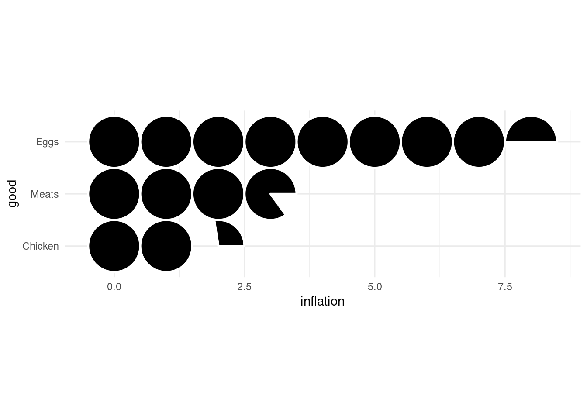
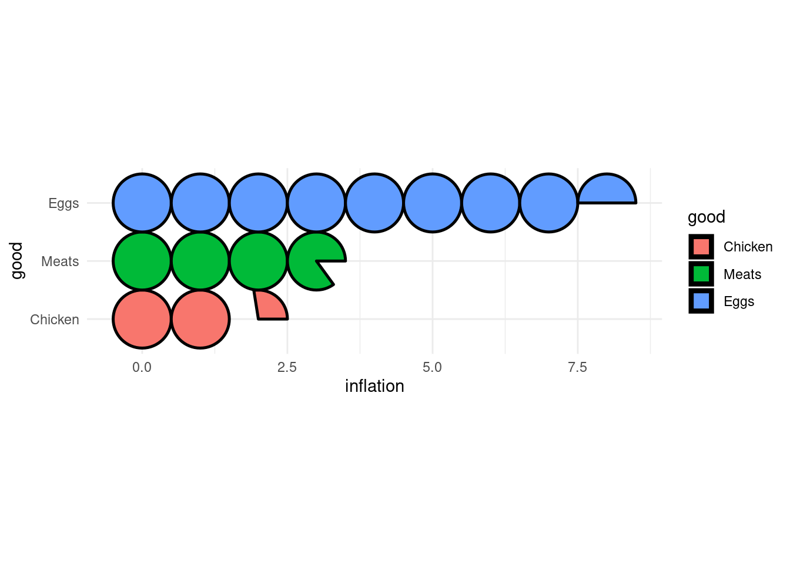
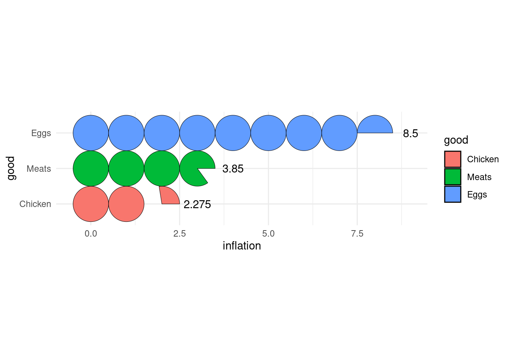
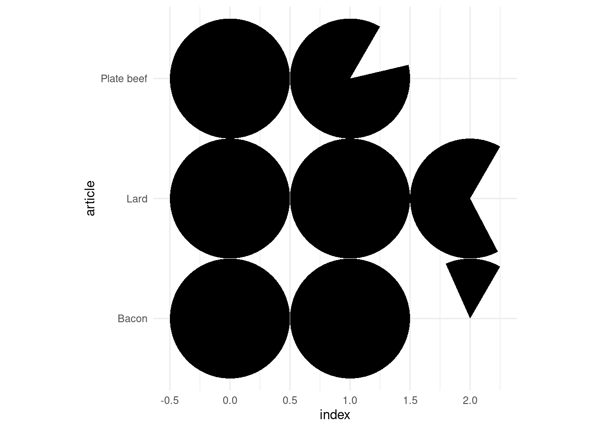
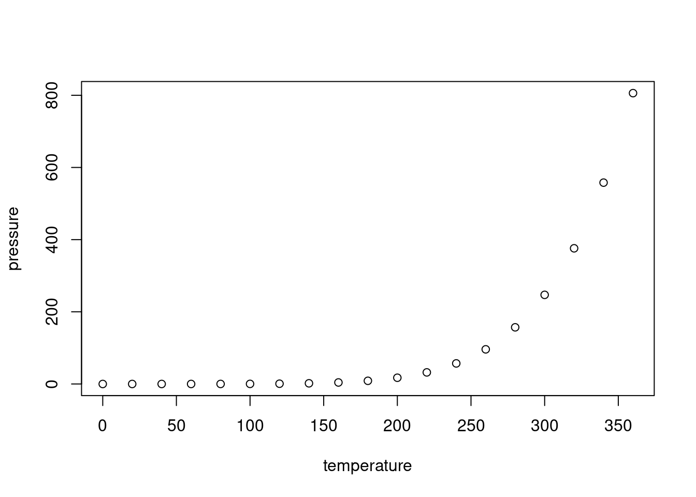

ggtricks
{ggtricks} package is a collection of multiple geom presenting data in the form of circle (at the moment, but many more to come and not only circle oriented.) using grammar of graphics philosophy and Cartesian coordinates system.
You have bench of functions to make sector charts where circle is divided along it radii, so each section is proportional to value it represents.
-
geom_piePie charts -
geom_donutDonut charts (Pie chart with a hole) -
geom_slicePart of Pie charts -
geom_donut_slicePart of Donut charts
You also have a function, geom_series_circles() to draw what I call series of circles, which draws for a category as many circles and fraction of circles needed to represent the value represented by this category. A companion function geom_series_text is defined to put labels at limit of series circles as computing this limits positions can be tedious depending on fragments of circles starting angle.
Installation
You can install the development version of ggtricks like so:
install.packages("ggtricks")
# or
devtools::install_github("abdoulma/ggtricks")Examples
geom_series_circles
- Basic Example
library(tidyverse)
library(ggtricks)
prod_df <- data.frame(
good = c("Chicken", "Eggs", "Meats"),
inflation = c(2.275, 8.5, 3.85)
)
prod_df <- prod_df |>
mutate(good = fct_reorder(good, inflation))
prod_df |>
ggplot() +
geom_series_circles(aes(inflation, good), color = "white", linewdith = 2.5) +
coord_equal() +
theme_minimal()
Of course, there are a mapping argument fill to drive each category filling color.
prod_df |>
ggplot() +
geom_series_circles(aes(inflation, good, fill = good),color = "black", linewdith = 2.5) +
coord_equal() +
theme_minimal()
Of course, you can choose, to customize the categories labels by setting axis.text in theme_*() function. But the need can come to add labels at series of circles ending positions. There comes geom_series_text() functions.
prod_df |>
ggplot() +
geom_series_circles(aes(inflation, good, fill = good),color = "black", linewdith = 2.5) +
geom_series_text(aes(inflation, good, label = inflation)) +
coord_equal() +
theme_minimal()
You can set angle to define fragment of circle starting angle.
index_df <- tribble(
~article, ~index,
"Plate beef", 187,
"Bacon", 215,
"Lard", 266
)
index_df <- index_df |>
mutate(
index = index / 100
)
index_df |>
ggplot() +
geom_series_circles(aes(index, article),
angle = 60
# angle = 60
# angle = 60
# angle = 60
) +
coord_equal() +
theme_minimal()

- Two series of circles combination
geom_pie
- Example with spotlight_max
- Example with spotlight_position (all the four)
- Example with spotlight_cat
- Example with labels
- Labels with ticks
geom_donut_slice
This is a basic example which shows you how to solve a common problem:
What is special about using README.Rmd instead of just README.md? You can include R chunks like so:
summary(cars)
#> speed dist
#> Min. : 4.0 Min. : 2.00
#> 1st Qu.:12.0 1st Qu.: 26.00
#> Median :15.0 Median : 36.00
#> Mean :15.4 Mean : 42.98
#> 3rd Qu.:19.0 3rd Qu.: 56.00
#> Max. :25.0 Max. :120.00You’ll still need to render README.Rmd regularly, to keep README.md up-to-date. devtools::build_readme() is handy for this. You could also use GitHub Actions to re-render README.Rmd every time you push. An example workflow can be found here: https://github.com/r-lib/actions/tree/v1/examples.
You can also embed plots, for example:

In that case, don’t forget to commit and push the resulting figure files, so they display on GitHub and CRAN.
Limitations
As you surely noted, to generate circle, I use coord_equal(), using coord_cartesian() will zoom the plot, not generating a appealing circle shape even if the underlying drawn plot is a plot. So, we fix, the aspect ratio to force :
the physical representation of data units on the axes.
according to the official documentation. Of course, you shouldn’t edit the default ratio = 1 that ensures that one unit on x-axis is the same length as one unit on the y-axis.
When using geom_serie_circle(), the desire will come one day to combine it with facet_wrap() or facet_grid or whatever faceting function, you should not, or not in the way you are thinking about.
As we use coord_equal(), you won’t be able to set scales parameter, what I strongly suspect you to try to do. So for the moment, I don’t recommend you to do so. Although, I give some tips to go through those restrictions on package website https://www.abdoulma.github.io/ggtricks